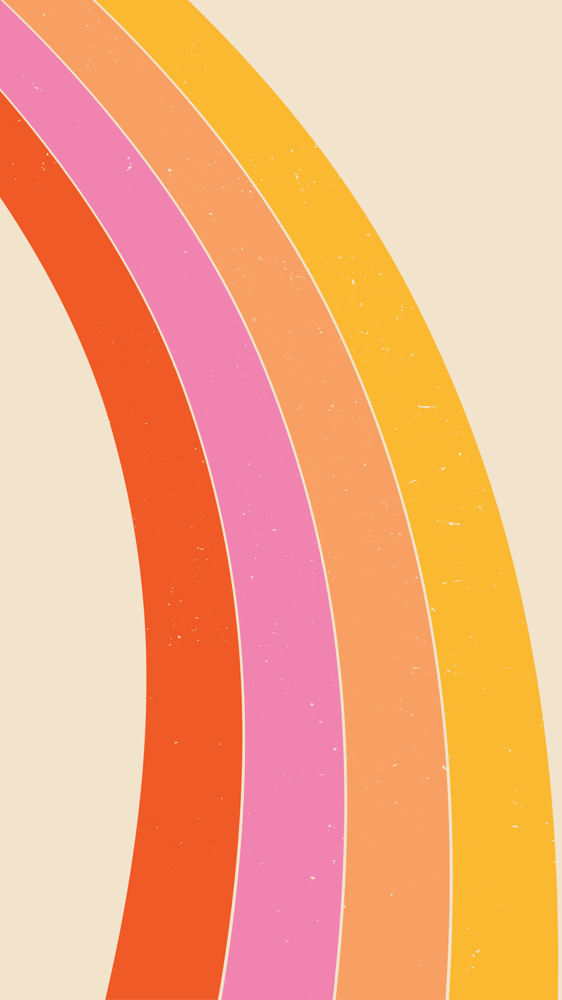

Show Code
import re
name = "TK Strand[1] (season 2)"
name = re.sub(r"\[.*?\]", "", name)
name = re.sub(r"\(.*?\)", "", name)
print(name)TK Strand LGBTQ+ representation in television and streaming media has become increasingly visible in recent years. Television series not only reflect social developments but also influence public perception of gender and sexuality. Because of this, analyzing LGBTQ+ representation in media is relevant for understanding broader cultural trends. However, previous studies suggest that increased visibility does not necessarily result in equal or authentic representation across all identities.
This project investigates LGBTQ+ characters in dramatic television series from the 2020s. The project combines automated data extraction, data cleaning, keyword-based label detection, and manual review in order to build a structured dataset of LGBTQ+ television characters.
The project also demonstrates how computational methods and reproducible data pipelines can be used for media and gender studies research.

Television is more than entertainment. It shapes cultural norms, influences public attitudes, and contributes to how social identities are understood. For many LGBTQ+ people, television is one of the first places where identities become visible and socially recognizable.
As LGBTQ+ representation has become increasingly visible in contemporary television, researchers have also highlighted that visibility remains uneven across different identities. While queer characters appear more frequently than in previous decades, cisgender and homosexual identities continue to dominate, whereas transgender and non-binary identities remain comparatively underrepresented. These findings demonstrate that measuring representation is not only about counting characters but also about understanding diversity and balance across identities.
To contextualize these imbalances, media studies increasingly draw upon the concept of intersectionality, a theoretical framework famously articulated by Kimberlé Crenshaw. This approach posits that social categories such as gender, sexuality, race, and class do not exist in isolation but interact to form interconnected systems of identity.
When media productions fail to account for these multi-layered realities, they often resort to restrictive narrative patterns. As media scholar Larry Gross observed, television rarely presents portrayals that challenge or expand existing expectations; instead, it frequently utilizes popular stereotypes as a shorthand code, flattening multi-layered lived experiences into easily recognizable, simplified types.
Applying this theoretical lens to media analysis means looking beyond single, isolated labels. It raises the question of whether contemporary television reflects these multi-layered realities or whether representation strategies continue to rely primarily on simplified, distinct categories.
This project explores which gender identities are represented, how frequently they appear, and whether representation is distributed evenly or concentrated among a limited number of identities. By combining open data with quantitative analysis, the study provides a transparent overview of current representation patterns in contemporary television.
The central research question of this project is:Which LGBTQ+ identities are represented most frequently in dramatic television series of the 2020s?
Additional sub-questions include:
Source Platform
Source Dataset
List of dramatic television series with LGBTQ characters: 2020s
Extracted Variables
Collection Method
Wikipedia Table Extraction
Raw data was extracted from the Wikipedia table and converted into a structured CSV dataset.
Output Dataset
lgbtq_series_wiki_table.csv
The project repository is organized into four main components:
● data – raw and processed datasets
● scripts – Python scripts for extraction, cleaning, enrichment, and visualization
● visualizations – generated charts and figures
● quarto – report files and styling
Projekt_GenderData/
├── data/
│ ├── raw/
│ └── processed/
├── scripts/
├── visualizations/
├── plots/
├── assets/
├── quarto/
├── docs/
├── index.qmd
└── README.mdThe project follows a structured data pipeline that transforms raw Wikipedia data into a cleaned, enriched, and reproducible dataset for analysis.
From raw data collection to final visualization, each step of the workflow was implemented and documented in Python.
WIKIPEDIA DATASET
DATA EXTRACTION
DATA CLEANING
IDENTITY DETECTION
RELATIONSHIP INFERENCE
MANUAL REVIEW
FINAL DATASET
VISUALIZATIONS
QUARTO REPORT
Each stage produces an output that serves as the input for the next stage, ensuring a transparent and reproducible workflow.
The pipeline combines automated processing with manual validation in order to improve data quality while maintaining reproducibility.
Before the analysis could begin, the dataset needed to be cleaned and standardized.
The raw Wikipedia table contained formatting inconsistencies, citation markers, and additional text elements that were not useful for the analysis.
The following preprocessing steps were performed:
For example:
TK Strand[1] (season 2)became:
import re
name = "TK Strand[1] (season 2)"
name = re.sub(r"\[.*?\]", "", name)
name = re.sub(r"\(.*?\)", "", name)
print(name)TK Strand After cleaning the dataset, the next step was to enrich each character with LGBTQ+ identity labels.
A rule-based Python script analyzed the Notes column using predefined keywords and regular expressions.
The script searched for identity-related terms such as:
Characters with matching terms were automatically assigned one or more identity labels for further analysis.
After the dataset had been cleaned, LGBTQ+ identities were detected automatically using a rule-based approach.
The script searched the
Notescolumn for predefined keywords using regular expressions (regex).
The following identities were detected automatically:
Example:
The character is gay.
The character is bisexual.
The character identifies as non-binary.could be automatically assigned to the corresponding category.
import re
text = "The character is bisexual."
if re.search(r"\bbisexual\b", text.lower()):
print("Bisexual")BisexualCharacters with matching keywords were automatically assigned the corresponding identity labels before the manual review stage.
The automatic classification stage significantly reduced the amount of manual work required during the later phases of the project.
Some characters did not explicitly state an LGBTQ+ identity.
The script therefore analyzed relationship descriptions to infer additional identity labels.
Example:
Rachel and Dana are in a romantic relationship.
Character A and Character B are lovers.
Character X is dating Character Y.Using the detected names and gender information, the script inferred potential LGBTQ+ identities based on the relationship context.
character_gender = "female"
partner_genders = ["female"]
if character_gender == "female" and "female" in partner_genders:
print("Lesbian")LesbianThe relationship inference process was particularly useful for descriptions that focused on relationships rather than explicitly mentioning sexual orientation or gender identity.
Although most identities were assigned automatically, several records required manual verification at different stages of the pipeline.
Manual review was performed whenever automatic classification was incomplete, ambiguous, or produced conflicting labels.
The manual review included:
[MANUAL_REVIEW_REQUIRED].
found_labels = []
if not found_labels:
print("[MANUAL_REVIEW_REQUIRED]")[MANUAL_REVIEW_REQUIRED]The reviewed records were merged with the automatically classified data to produce the final dataset used for the analysis.
After the review process was completed, the manually labeled records were merged with the automatically classified entries to create the final dataset used for analysis and visualization.
This combination of automated processing and manual validation resulted in a more complete and reliable dataset.
After multiple enrichment, review, and validation steps, the final curated dataset was loaded for analysis and visualization.
The final dataset combines automatically classified entries with manually reviewed records.
Dataset used for the final analysis:
final_labeled_data.csvThe table below shows the first rows of the dataset used throughout the analysis.
import pandas as pd
import matplotlib.pyplot as plt
df = pd.read_csv(
"data/processed/final_labeled_data.csv",
sep=None,
engine="python"
)
df.head()| Year | Series | Network | Character | Actor | Notes | Final_Label | |
|---|---|---|---|---|---|---|---|
| 0 | 2020–2025 | 9-1-1: Lone Star | Fox | TK Strand | Ronen Rubinstein | TK is a gay paramedic who was formerly a firef... | Gay |
| 1 | 2020–2025 | 9-1-1: Lone Star | Fox | Carlos Reyes | Rafael L. Silva | Carlos is gay and a policeman. He is married t... | Gay |
| 2 | 2020–2025 | 9-1-1: Lone Star | Fox | Paul Strickland | Brian Michael Smith | Paul is a trans man and a firefighter.[3] | Transgender |
| 3 | 2020–2025 | 9-1-1: Lone Star | Fox | Nancy Gillian | Brianna Baker | Nancy is a bisexual woman and a paramedic. | Bisexual |
| 4 | 2020– | Alice in Borderland | Netflix | Hikari Kuina | Aya Asahina | Kuina is a transgender woman and skilled fight... | Transgender |
After data extraction, cleaning, enrichment, and several rounds of manual validation, the final dataset was prepared for analysis.
The final dataset contains curated LGBTQ+ characters from dramatic television series released between 2020 and 2025.
Each row represents one television character together with information about the series, actor, source notes, and the final identity labels assigned through the pipeline.
The final dataset contains the following variables:
The Final_Label column contains the curated identity labels generated through automatic detection, relationship inference, and manual review.
The following Python code provides a quick overview of the final dataset.
print(f"Rows: {len(df)}")
print(f"Columns: {len(df.columns)}")
for col in df.columns:
print("•", col)Rows: 566
Columns: 7
• Year
• Series
• Network
• Character
• Actor
• Notes
• Final_Label
To analyze LGBTQ+ representation, the identity labels contained in the final dataset were summarized and counted.
Characters with multiple identity labels contribute to each corresponding identity category.
The following code extracts the Final_Label column, separates multiple labels, removes unresolved entries, and calculates the frequency of each LGBTQ+ identity.
labels = (
df["Final_Label"]
.dropna()
.astype(str)
.str.split(";")
.explode()
.str.strip()
)
labels = labels[
labels != "[MANUAL_REVIEW_REQUIRED]"
]
counts = labels.value_counts()
counts_df = (
counts
.reset_index()
.rename(columns={
"index": "Identity",
"Final_Label": "Count"
})
)
counts_df| Count | count | |
|---|---|---|
| 0 | Gay | 272 |
| 1 | Lesbian | 156 |
| 2 | Bisexual | 64 |
| 3 | Queer | 31 |
| 4 | Transgender | 25 |
| 5 | Pansexual | 17 |
| 6 | Non-binary | 15 |
| 7 | Asexual | 4 |
| 8 | Genderfluid | 2 |
| 9 | Intersex | 1 |
This pictogram bar chart displays the absolute number of unique characters documented within the dataset over the last five years. Because an individual character may possess multiple intersecting identities (e.g., both Transgender and Lesbian), each specific label is counted independently toward the total volume of its respective category. The individual columns are organized in descending order to illustrate the overall frequency of tracked classifications across the entire sample.
This stacked bar chart highlights the top five television series with the highest volume of LGBTQ+ characters, broken down by specific identity labels. Because characters with intersecting identities are counted across multiple relevant categories, this visualization reflects the internal diversity and distribution of specific representations within each prominent title.
This visualization tracks the annual percentage share of identity groups from 2020 to 2025 based on the character’s year of release. The trend lines illustrate how the internal proportions of represented identities shift within the overall media landscape over consecutive production cycles.
This Sankey diagram maps the structural distribution of LGBTQ+ representation across major media networks and platforms. By tracing the direct flow from specific networks to simplified identity categories, the visualization reveals which media ecosystems generate the highest volume of diverse character identities within the dataset.
This circular network diagram maps the multi-layered overlaps of LGBTQ+ identity classifications within individual characters. The visualization uses three distinct structural mechanisms:
Three key findings emerged from the dataset and visualizations.
The empirical distribution reveals a distinct concentration within the dataset, characterized by a significant volume of cis-male representation. Characters classified as Gay constitute the absolute majority of the sample (270+ instances), notably outnumbering Lesbian characters (~155 instances)—not to mention the limited visibility of all other remaining identity groups combined.
This quantitative divergence indicates an industry tendency where television production ecosystems consistently allocate higher visibility to established, cis-male narrative frameworks rather than distributing representation evenly across the queer spectrum.
Beyond the primary gay and lesbian categories, the data exhibits a sharp drop in character counts, illustrating the clear differences in visibility across the wider LGBTQ+ spectrum. While Bisexual characters maintain a visible secondary baseline (~65 instances), gender-diverse identities such as Transgender (~25 instances) and Non-Binary (~15 instances) occupy a marginal fraction of the overall dataset.
This structural decline—further underlined by the minimal presence of Asexual, Genderfluid, and Intersex individuals—demonstrates that contemporary media environments frequently prioritize binary orientations over more complex non-binary gender identities and attractions directed toward multiple genders.
The network analysis provides empirical evidence that television narratives predominantly isolate identity classifications into distinct, single-axis categories. Within the entire sample, a total of 17 characters are mapped with a dual-identity combination, and only 2 characters present profiles containing three or more concurrent labels.
The data shows that television characters are rarely allowed to be multi-dimensional. Mainstream media production continues to isolate queer identities into simplified, separate boxes rather than representing the complex, intersectional realities of real life.
Overall, the findings show high visibility for a few dominant groups, but very limited representation for gender-diverse and intersectional characters.
The distribution of characters across the analyzed platforms highlights a highly centralized representation structure. Although digital media environments host a wide variety of series, the data indicates that expansive production space does not automatically lead to an even distribution across the queer spectrum.
This persistent concentration suggests that contemporary television productions may still operate under specific constraints. To appeal to broad, global audiences, character design appears to lean heavily toward established, more socially visible identities, potentially to mitigate narrative or financial risks.
Furthermore, the lack of overlapping labels indicates that character development continues to favor simplified, single-axis frameworks. Even within modern production environments, identity markers are predominantly isolated into distinct categories rather than integrated into multi-dimensional, intersectional profiles.
In short, the results suggest that while modern television infrastructure allows for a high volume of visibility, representation strategies remain characterized by a strong focus on a few prominent groups and simplified, isolated character profiles.
This project used a rule-based classification approach instead of machine learning methods.
The primary goal was to ensure transparency, reproducibility, and interpretability throughout the enrichment process.
The enrichment process relied primarily on:
One advantage of this approach is that the classification process can be reproduced consistently across the dataset.
In addition, the method does not require large training datasets or complex machine learning models.
However, the approach also has several weaknesses.
Keyword-based systems depend heavily on the wording used in the Notes column. If identities or relationships are described indirectly, the system may fail to classify the character correctly.
For example, descriptions such as:
"They are romantically involved."
provide limited contextual information and may require manual interpretation.
Dependence on Wikipedia
The dataset was based entirely on information collected from Wikipedia.
Because Wikipedia is community-generated, the data may contain inconsistencies, incomplete entries, or outdated information.
Some television characters also had very limited descriptions, which made automatic classification more difficult.
Ambiguous Character Descriptions
Many entries in the Notes column described relationships indirectly without explicitly mentioning LGBTQ+ identities.
For example, descriptions such as:
"X and Y are in a relationship."
provide insufficient information for reliable automatic classification and often require manual review.
Representation is not solely a matter of visibility but also of diversity, balance, and inclusion. By examining gender identities across television series released between 2020 and 2025, this project contributes to a broader understanding of how contemporary media reflects social change. The results support existing research while providing an open-data perspective on representation patterns in modern television.
The project demonstrates how computational approaches can support research in media studies and gender studies.
The project combined multiple stages of data processing, including:
The results showed that gay and lesbian characters are represented more frequently than other LGBTQ+ identities such as non-binary, intersex, genderfluid, or asexual characters.
The analysis also demonstrated the important role of streaming platforms in increasing LGBTQ+ visibility within contemporary television media.
At the same time, the project highlighted several methodological challenges, including ambiguous descriptions, incomplete source data, and the limitations of automated identity classification.
By combining automated methods with manual validation, the project achieved a more reliable and reproducible dataset.
Overall, the project demonstrates how computational approaches can be applied to questions in media studies and gender studies while also emphasizing the importance of critical reflection when working with social and cultural data.
One of the main objectives of this project was to ensure that the complete workflow could be reproduced by other researchers.
The project follows a structured pipeline that transforms raw Wikipedia data into a curated dataset and the visualizations presented in this report. All processing steps were implemented in Python and documented within the GitHub repository.
The workflow can be reproduced by executing the following steps in order:
data_extraction.py
data_enrichment.py
data_enrichment_plus.py
merge_data.py
final_labeled_data.csv.repair_csv.py
Final_Label.absolute_icon_bar.pytop_5_bar_chart.pydevelopment_over_years_line.pynetwork_sankey.pycooccurence_network.pyreport.qmdAll required Python packages are listed in requirements.txt, allowing the computational environment to be recreated.
The final dataset used throughout the analysis is stored as:
data/processed/final_labeled_data.csvThe project is managed using Git and GitHub, ensuring version control, collaboration, transparency, and reproducibility throughout the entire workflow.
Data Source
Knowledge Base
Data Analysis
Report Framework
Additional Libraries
Visual Assets
Picrew Avatar Maker by bittelizard ↗
Research Literature
Thomson, K. (2021). An Analysis of LGBTQ+ Representation in Television and Film. ↗